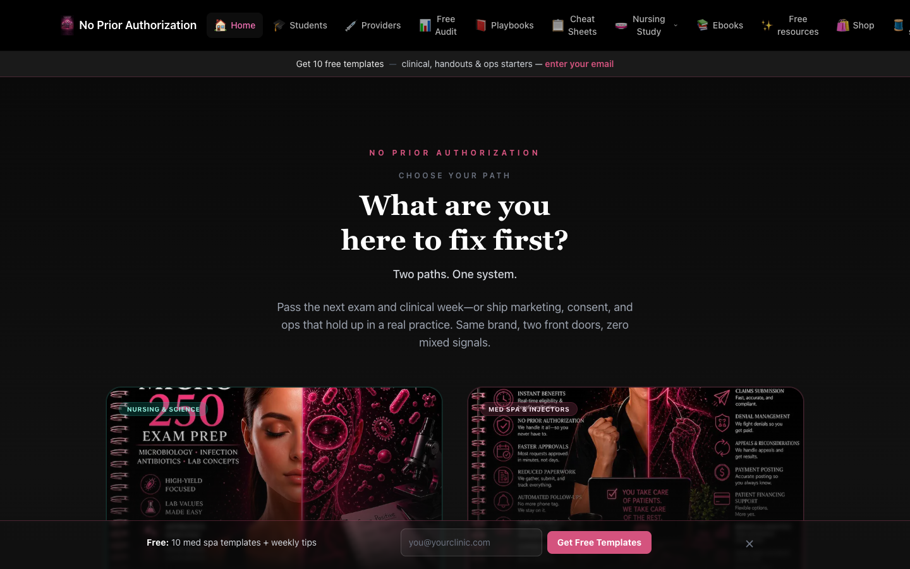
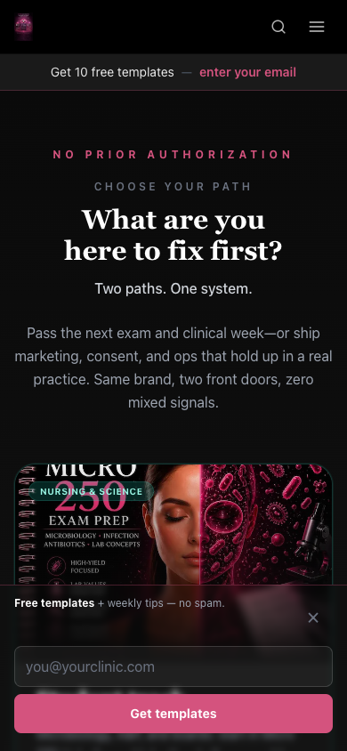
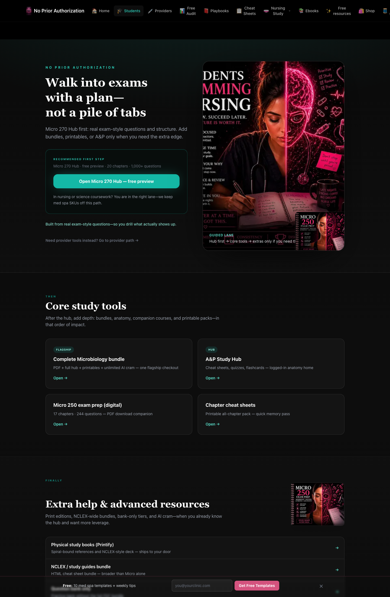
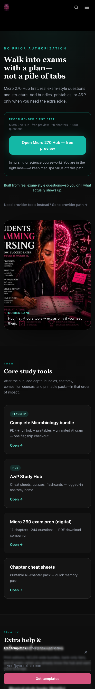
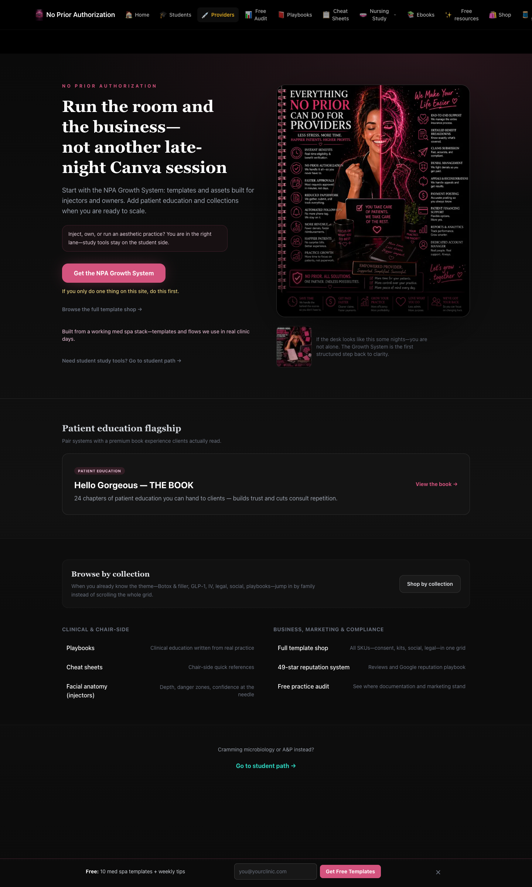
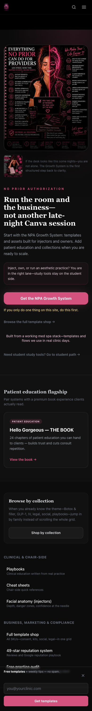

Open this file locally after deploy, or from /deliverables/audience-review-2026-04-21/ on the site. Desktop vs mobile pairs for copy and emotional read—not layout QA at 1:1 scale.
/deliverables/audience-review-2026-04-21/





